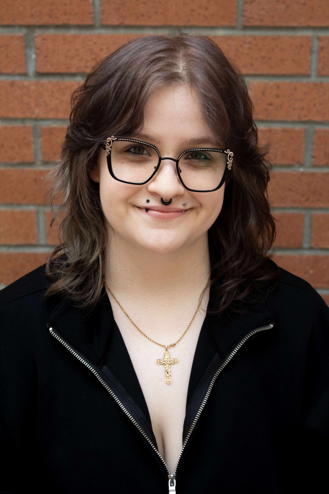
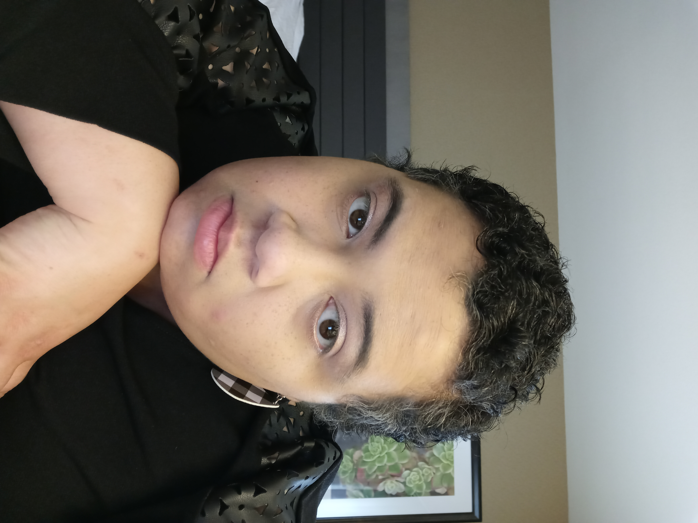
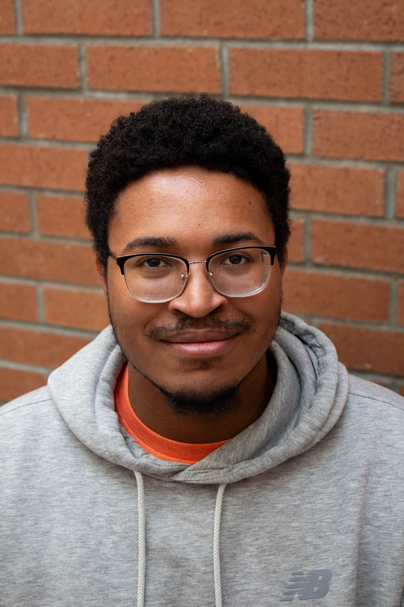
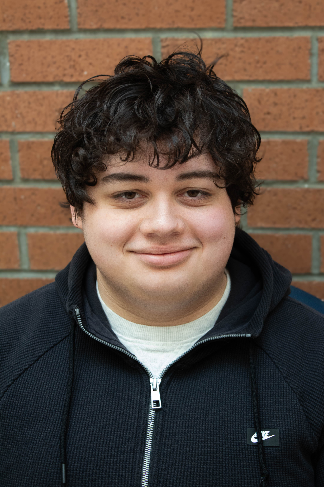
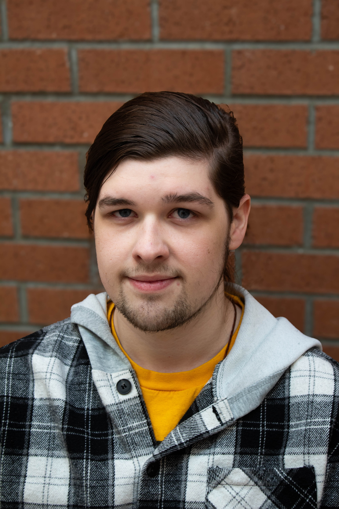
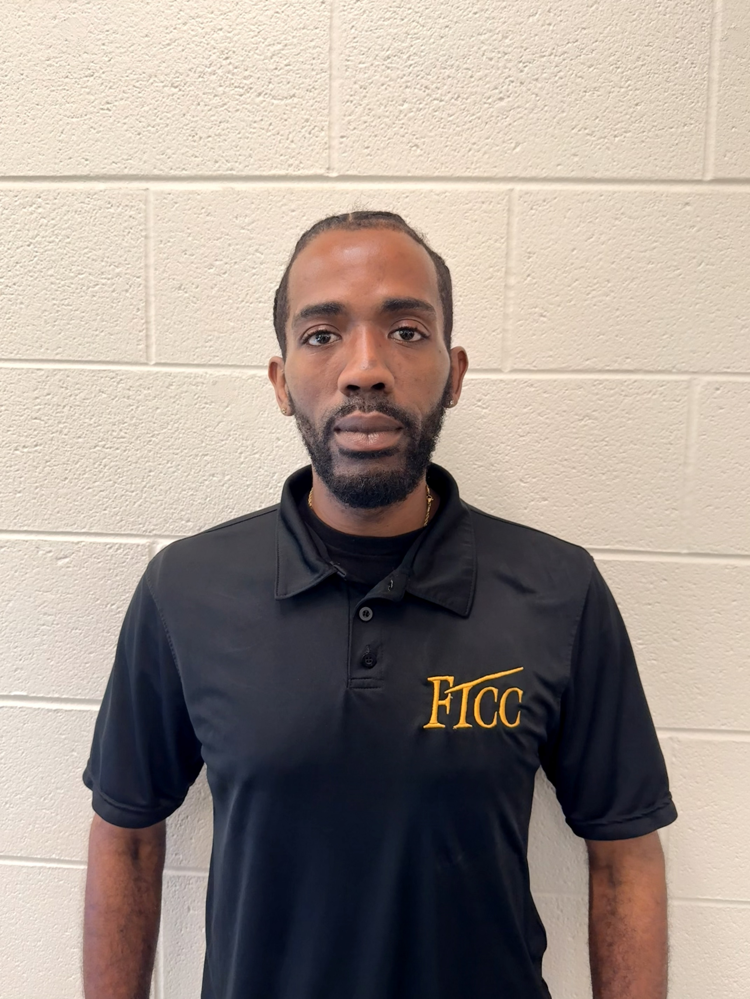
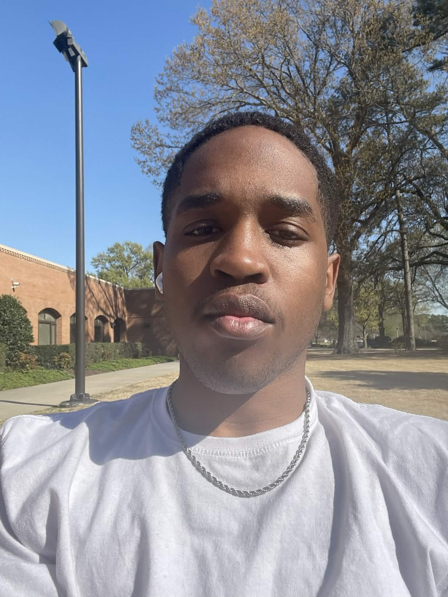

Erin Hoffman
He/Him
Lead artist and designer with a passion for creating visually stunning and immersive game worlds
Favorite Games: World of Warcraft, Elden Ring, Bloodborne, Baldur’s Gate 3, Oblivion, Vampire Survivors

Shauna Miletty
She/Her
Web designer and developer with expertise in crafting responsive and user-friendly interfaces.
Favorite Games: My Time at Portia, Power Wash Simulator, and House Flipper
Visit her Portfolio
Jaheim Whitehead
He/Him
Modeller and animator with a passion for creating lifelike characters and dynamic animations.
Favorite Games: Bayonetta 2

Bajaya Haire
She/Her
Illustrator and concept artist specializing in background design and UI design.
Favorite Games: Genshin Impact, Honkai Star Rail, and Wuthering Waves
Visit her Behance
Gianni Tuduri
He/Him
Programmer and Rigging Artist with a strong background in game development and a passion for creating immersive gameplay experiences.
Favorite Games: Favorite Game: Cyberpunk 2077

Trey White
He/Him
Programmer and Animator with a strong background in game development and a passion for creating immersive gameplay experiences.
Favorite Games: Infamous: Second Son, Shadow of the Colossus, Sekiro and Stardew Valley

Dominique Mclean
He/Him
Skilled videographer and editor with a passion for creating visually compelling content.
Favorite Games: Grand Theft Auto V,

Isiah Major
He/Him
A instinctive communicator and writer with a passion bringer people together through storytelling.
Favorite Games: The Witcher 3: Wild Hunt, Red Dead Redemption 2, and The Last of Us Part II